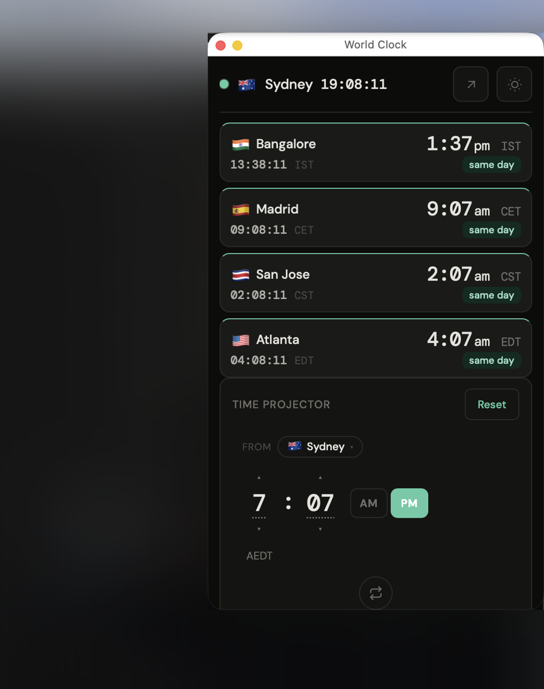
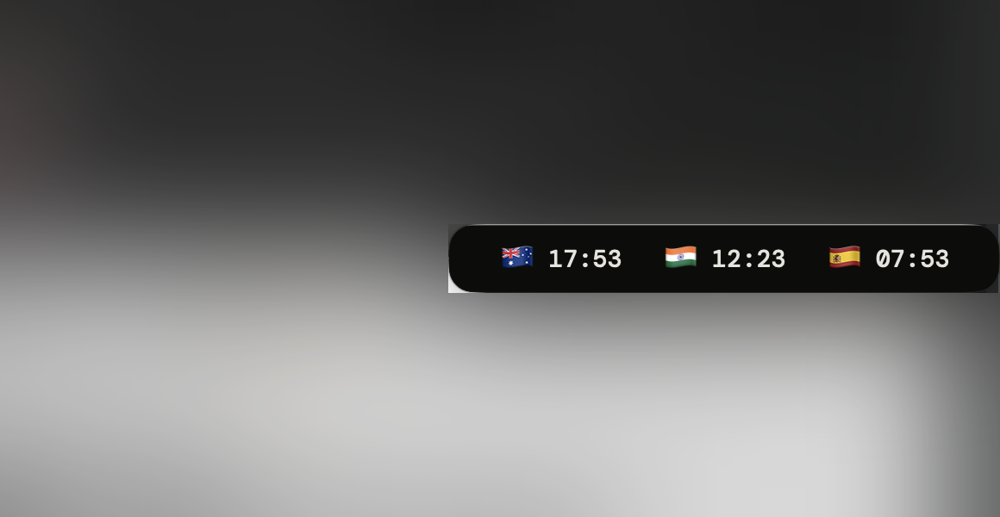
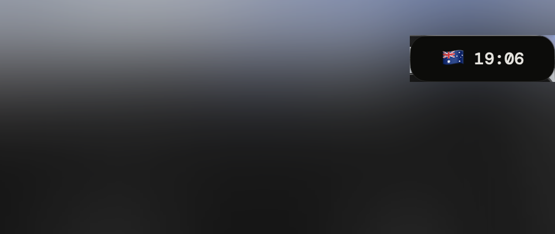

World Clock for the Mac
The same clock, without the browser. A small window that stays on top of whatever you are doing, collapses to one row of times, and down to a single time when you want it out of the way.
Three steps
- Unzip and drag World Clock into Applications.
Then open it. A small clock appears in your menu bar and the panel opens.
- The first open needs one extra click.
The app is not signed with an Apple developer account, so macOS will say it could not verify it and refuse. Open System Settings, then Privacy & Security, scroll down, and click Open Anyway. That happens once. If you prefer the Terminal:
xattr -dr com.apple.quarantine "/Applications/World Clock.app"
- Make it start with your Mac.
Right-click the clock in the menu bar and turn on Launch at Login. From then on it is just there.
What you get



Good to know
- Your cities
- Set them once in the panel; they are kept inside the app between launches, separate from Safari.
- Privacy
- It loads one page, estebangz.com/world-clock, and nothing else. No account, no tracking.
- Updates
- The times and the clock itself come from the website, so improvements there show up in the app on its own. A new app build only matters when the window itself changes.
- Remove it
- Quit from the menu bar clock and drag the app to the Trash.
- Built from
- One Swift file in the world-clock repo. If you would rather build it yourself, the README there is one command.